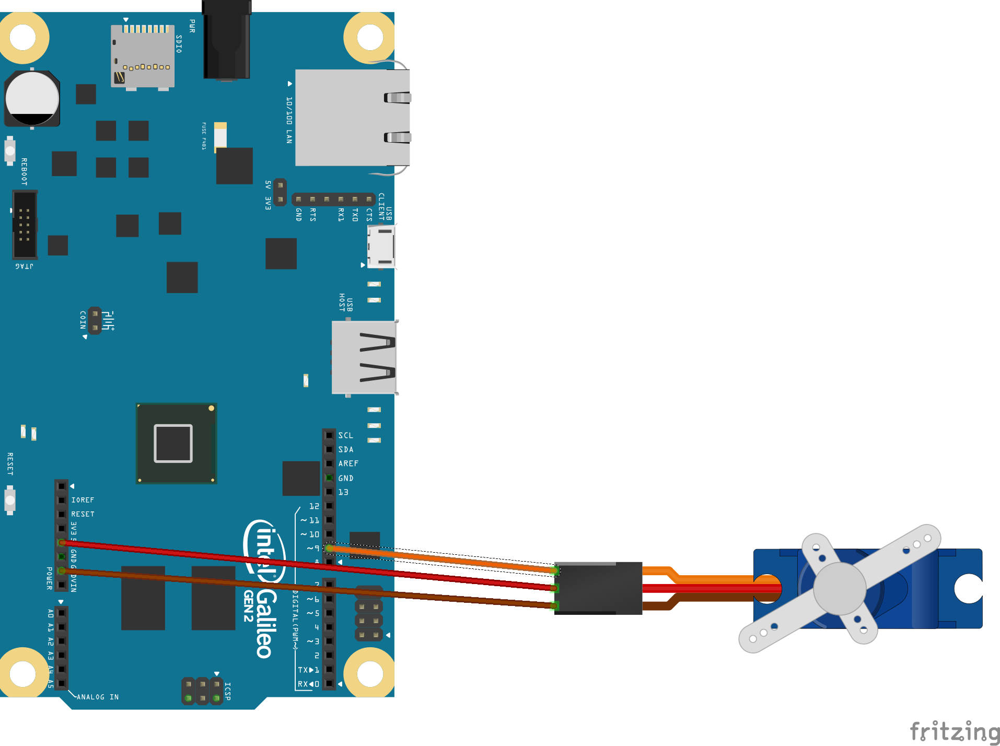
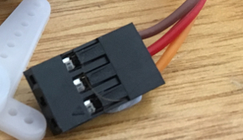

Using Servomotors with Galileo
Servomotors are special motors that can be made to move back and forth to a particular position - unlike your basic electric motor that just spins round and round, like a fan for instance.
A servomotor is more like a controllable arm - only a lot smaller - so if you want to make a robot wave an arm, or you want a motor to aim a Nerf cannon, or push a button, then a servomotor could work well.
We are mainly using the SG90 servomotor, a small blue unit that looks a bit like a normal motor with three wires that terminate in a connector. We can insert the end of a jumper wire into the connector to make our circuit.
This circuit diagram shows how to wire up the servomotor to the Galileo board for the Sparkfun experiment (number 8)
Servomotor images
-
SG90 servo
The Tower Pro SG90 servo is a small blue servo with three wires.
-

Connections
The servo connections are a brown ground wire, a red power wire, and an orange signal wire.